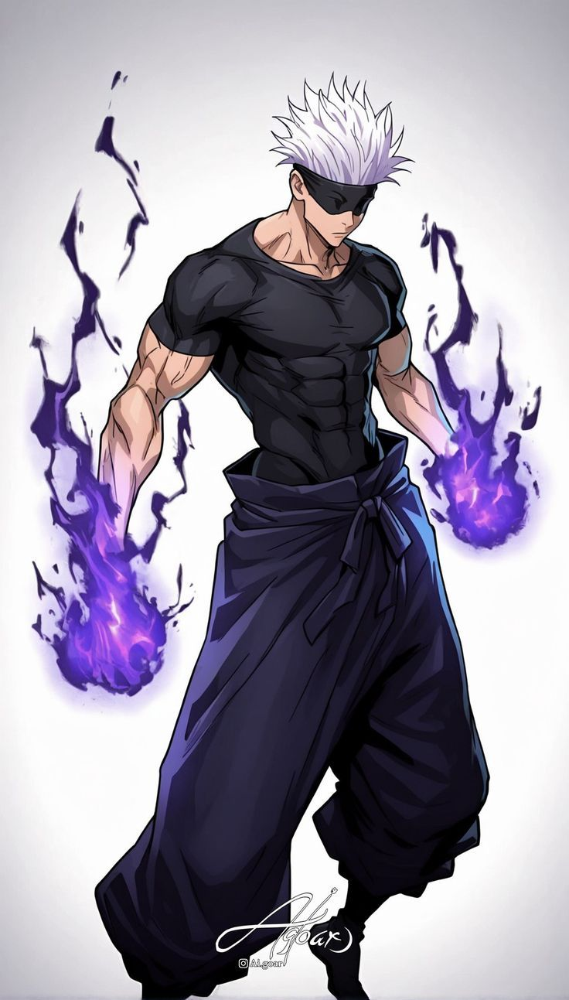
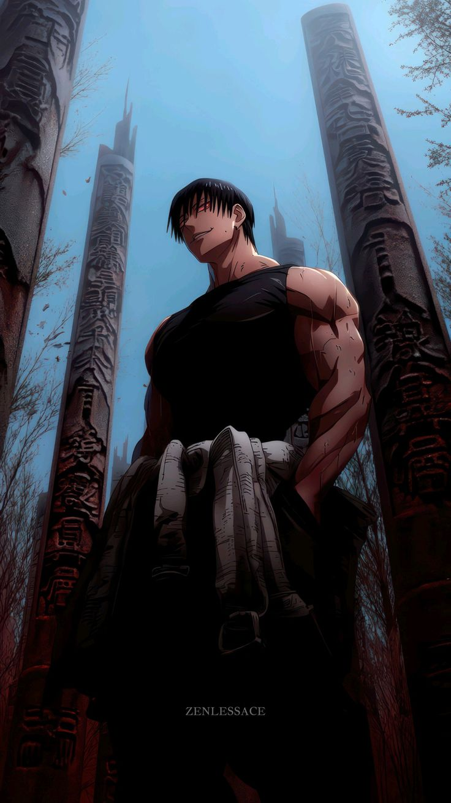
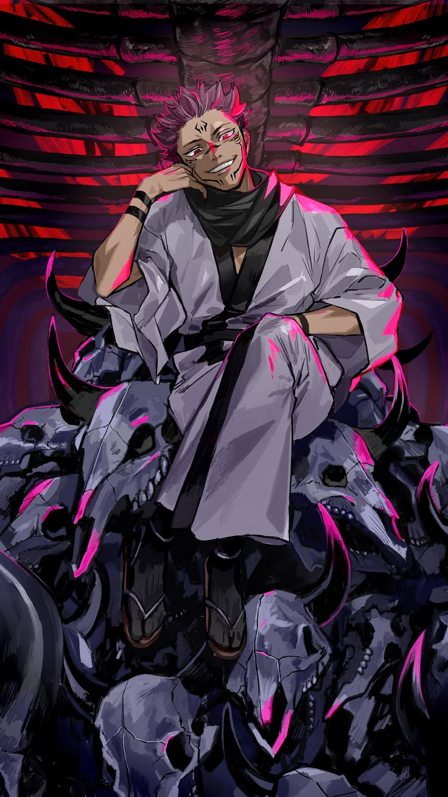
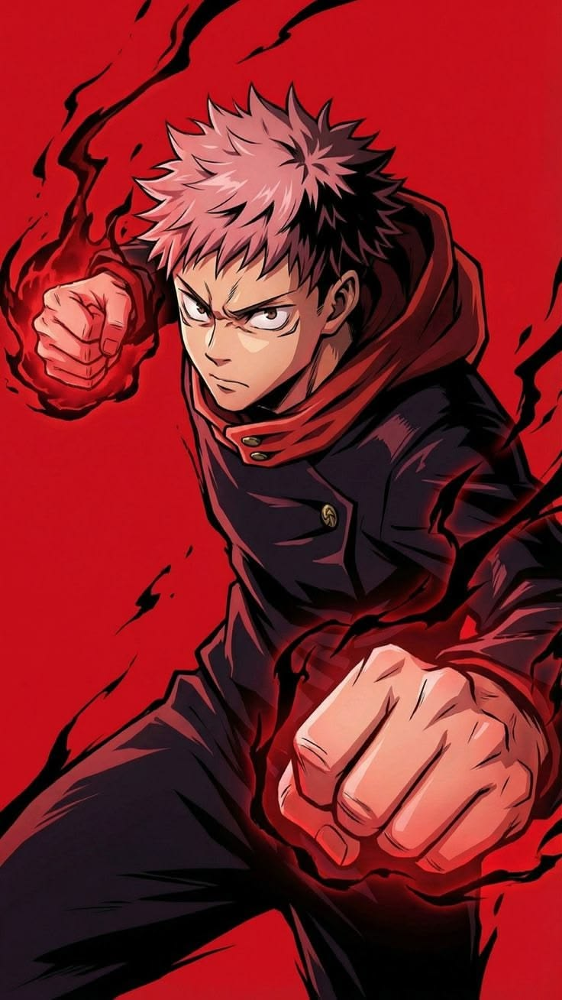

Grid Card & Design
Mise en page en grille avec cards — univers Jujutsu Kaisen

Gojo Satoru
L'exorciste le plus puissant de sa génération. Il possède l'infini et le sixième œil. Son territoire : la Sphère de l'Espace Infini.
voir plus
Toji Fushiguro
Exorciste de classe S dépourvu d'énergie occulte. Il a failli battre Gojo Satoru au sommet de sa puissance.
voir plus
Megumi Fushiguro
Exorciste de classe 1 possédant les 10 ombres. Extension du territoire : le Jardin des Ombres. Deuxième réceptacle de Sukuna.
voir plus
Yuta Okkotsu
Exorciste de classe S. Il possède la reine des fléaux RIKA. Considéré comme le deuxième exorciste le plus puissant après Gojo Satoru.
voir plus
Ryomen Sukuna
Le roi des fléaux. Être le plus puissant de toute l'histoire. Son territoire : le Repas Démoniaque — Déconstruction.
voir plus
Yuji Itadori
Premier réceptacle de Sukuna. Force physique hors norme et apprentissage rapide des techniques. Héros principal de la série.
voir plus